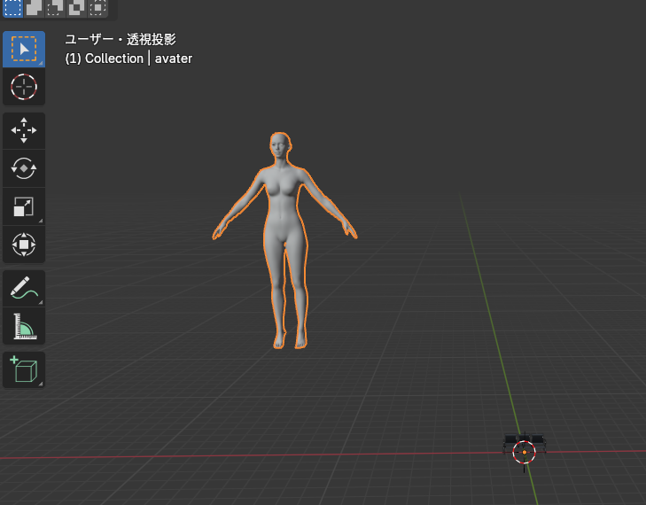

0. はじめに
- 【スケジュール】
-
- 12/24(火)、25(水)：各自制作
- 【講義資料】
-
- ページ下部に「上部へ戻る」と「ショートカット一覧」のボタンがあります。
- 【本日の内容】
-
- Blenderで制作し、CLOへインポートするための手順
- 時間内で、できる限り作りたいものを作る。

Blenderのメインの作業エリア。XYZ座標で定義された3D空間上に「オブジェクト（様々な物体）」「カメラ」「ライト」等が配置されている。


以下の設定をすることで、選択したオブジェクトを中心に視点を回転してくれる。

以下の設定をすることで、マウスカーソルの位置に合わせてズームしてくれる。

Blenderでは距離に関係なくオブジェクトが同じ大きさになる平行投影と、遠くの物体が小さく見える透視投影の2種類の投影法があり、モデリング作業は平行投影の方が向いている。

ファイル内で配置・作成されたデータを一覧で表示する。ビューポート上の表示・非表示の切り替えや、名前の変更（ダブルクリック）、削除（DELETE）などを行うことができる。

※カメラとライトを非表示にしておく。
選択されているオブジェクトの詳細な情報を表示し、各種編集を行う。

※「モディファイアー」と「マテリアル」はよく使用するので覚えておく。
3Dモデルを編集するための各種ツール。「t」キーで表示・非表示を切り替え可能。
マウスオーバーで説明とショートカットが表示されるので徐々に覚えると良い。
t表示／非表示

※Blenderは落ちやすいので、こまめに保存すること。
これからやる内容が、インストールされているCLOのバージョンでも動作するかチェック。


Blenderで作業する際、最終的なスケール感を把握するために、CLOのアバターをインポートしておくと良い。
